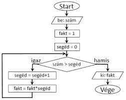

Programtervezési ismeretek
Ez a kurzus a programtervezési ismeretek tematikáját tartalmazza.
Temantika
- A modellek szerepe a probléma megoldásban, a modellezés szükségessége.
- Az adat és ábrázolása, megjelenítése.
- Az algoritmus fogalma, az algoritmizálás.
- Az algoritmus lejegyzése, ellenőrzése, dokumentálása.
- Az algoritmus hatékonysága.
- Algoritmuskészítési technikák.
- A folyamatábra, struktogram, döntési táblák.
- Az algoritmus realizálása, a realizáció korlátai.
- Korlátfeloldási, lazítási lehetőségek.
- A számítógép szerepe, a hardver és a szoftver megválasztása.
- Programozás és a jó program készítésének alapelvei, technikái.
- A feladatmegoldás lezárása, dokumentációkészítési elvek.